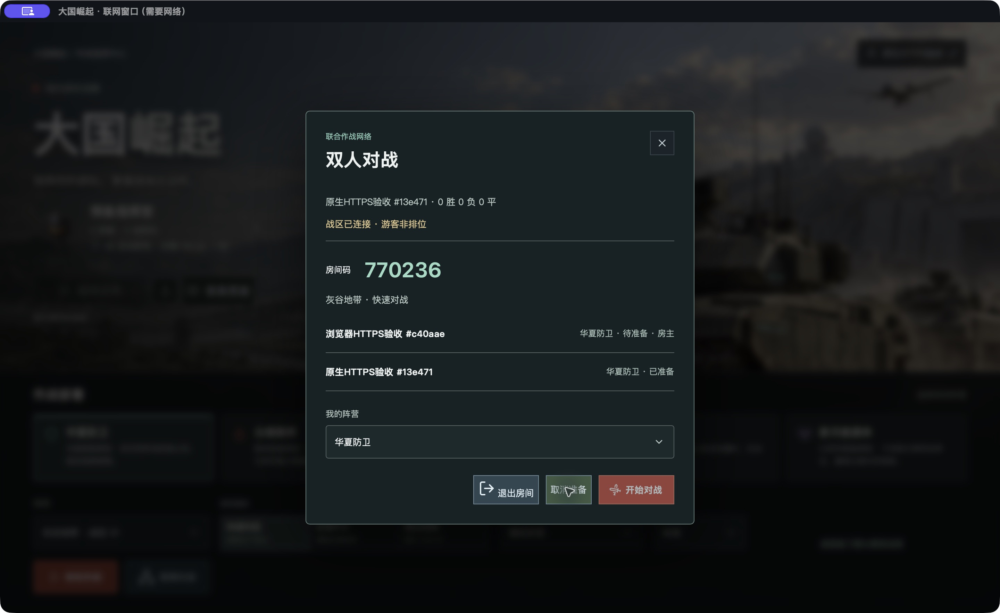

经济与建设
电力决定设施运转，资金支持生产与维修。常规战区依靠运输后勤，月表战区就地采矿；中立资源值得争夺。
先建立持续作战能力
OPERATION 0.9.1 / 桌面实验版已开放
建起基地，派出侦察，护住后勤。
让陆、海、空在同一张战术地图上协同推进。
原创开源即时战略 · 浏览器双人联机测试 · 不代表现实装备性能
FIELD RECORDING / 真实战场
六秒单机实机交火，来自公开版本的真实录制。
现代装备与科技幻想属于游戏设定。
COMBINED ARMS / 作战体系
电力决定设施运转，资金支持生产与维修。常规战区依靠运输后勤，月表战区就地采矿；中立资源值得争夺。
先建立持续作战能力战争迷雾遮住对手。雷达、声呐与侦察单位各有职责，防空、电子干扰和反无人机装备改变交锋方式。
先看到，再作决定有限弹药、返场维修、港口整备与运输容量，让轮换和护航成为战术选择。昂贵单位也不能永远独自推进。
让部队回得来，接得上装备参考公开原型，数值服务于玩法和平衡。本项目不是官方《红色警戒》续作，不提供现实军事性能评价。
THEATER INTELLIGENCE / 战区情报
真实原生联网窗口截图

真实浏览器游戏截图

真实双身份大厅验收截图 · 同一Mac
NEXT FRONTIER / 六域会战候选
六方自由对战正在本地候选开发：5760×5760战区、六套公平出生资源、可实际采集的矿点与中心争夺区，真人和 AI 使用相同规则。
候选开发与验收中 · 尚未部署公开六人服务
旧双人模式保留。六席位同步、隐私、淘汰、重连和性能验证通过后，再决定公开范围。
DEPLOYMENT / 选择你的平台
当前桌面实验版 0.9.1。Mac ARM64 已实机验收，其他平台已构建、尚待设备测试。
包小不等于帧率更高；请按架构与下载来源核对 SHA256。
Apple Silicon / Intel
ad-hoc签名 · 未Apple公证
x64 安装器 · 含离线 WebView2
未代码签名 · 未实机验收
x64 / ARM64 · DEB 与 AppImage
WebKitGTK 4.1 / GTK3 / WebGL2
BUILD WITH US / 一起把游戏养起来
试玩、提 Bug、调平衡、画模型。每一次认真反馈，都会变成下一轮具体的改进。
反馈请带上版本、系统架构、地图、阵营与复现步骤。原创或授权清晰的素材，才能进入这个开源战场。